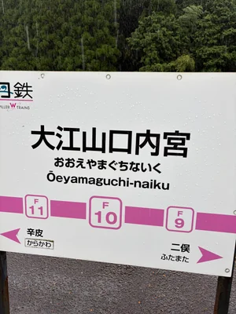
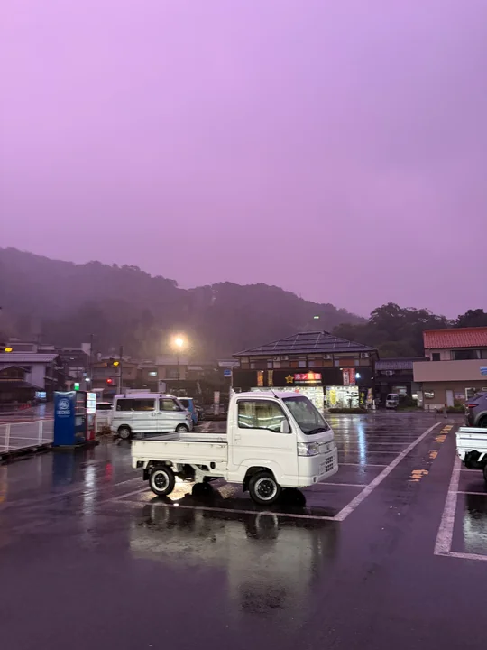
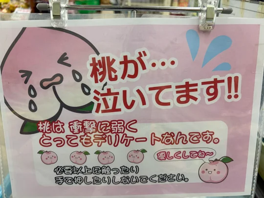
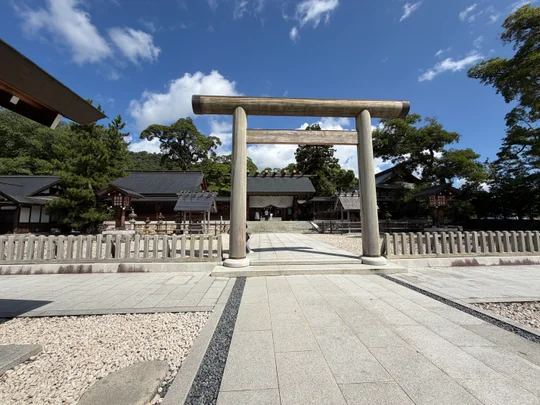
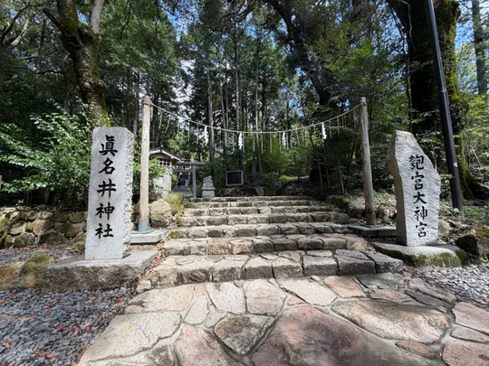
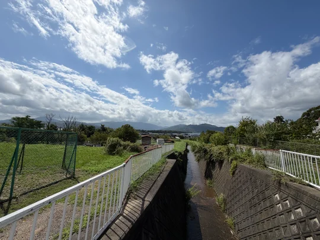
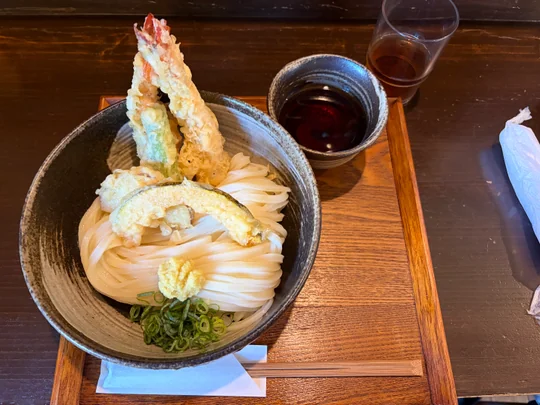
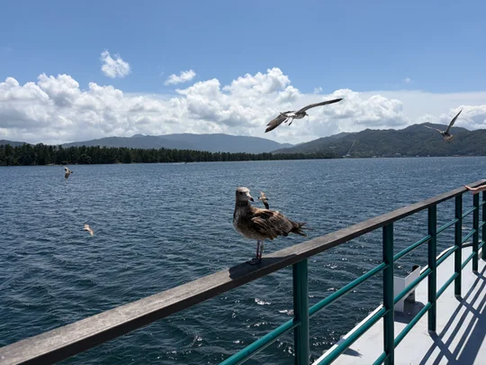
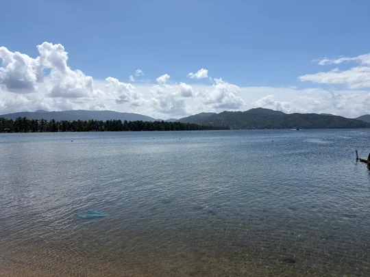

(元)お伊勢参り
9月初頭に丹後国は宮津にいきました。宮津の中でも主に天橋立北側、府中地区で過ごしました。
初日は、福知山から北上して大江山に寄って天橋立まで行く予定でした。しかし、この雨。大江山の神社は諦め、(なぜか誰もいない駅で1時間雨の中過ごして待ちながら)天橋立に直行することにしました。


そして翌日、友人と合流し、天橋立をや周辺の海岸を散策し、海鮮丼を食べました。しかしながら、雨が降ってしまったので宿に退散。天気がとんでもないことになってました。



なんでこんなに空がピンク？


籠神社については、かつての伊勢神宮があったことに思いを馳せながら、神社を参拝しました。やはり、現在の伊勢神宮と似ている点が多かったように感じました。眞名井神社に関しては、磐座が信仰の対象となっており、それが維持されていることに驚きました。











